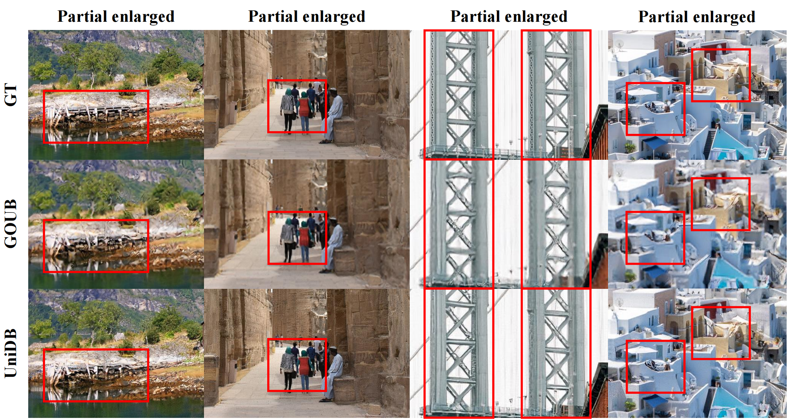
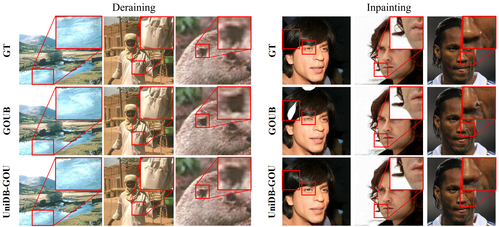
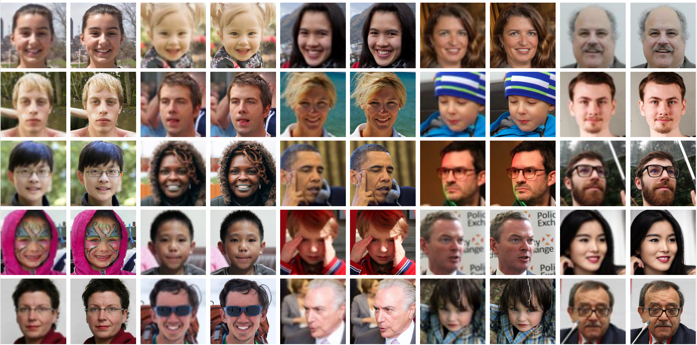
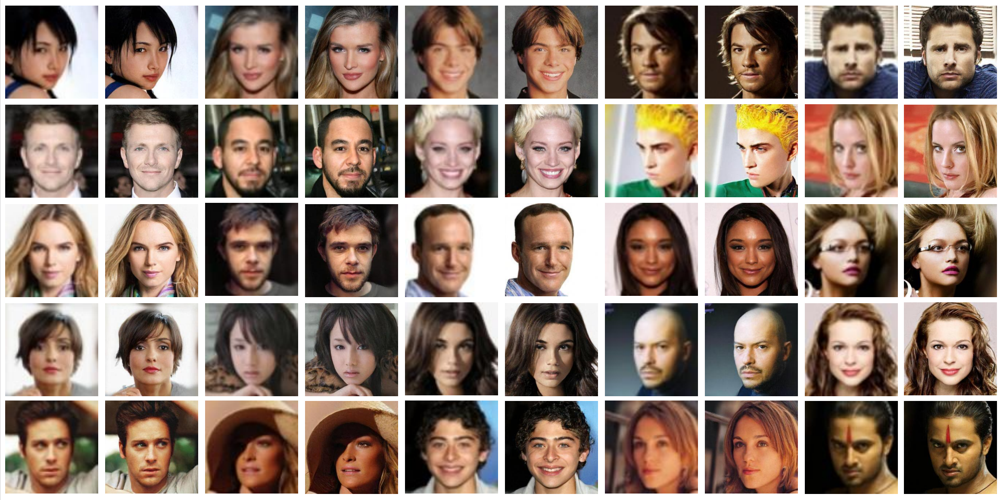
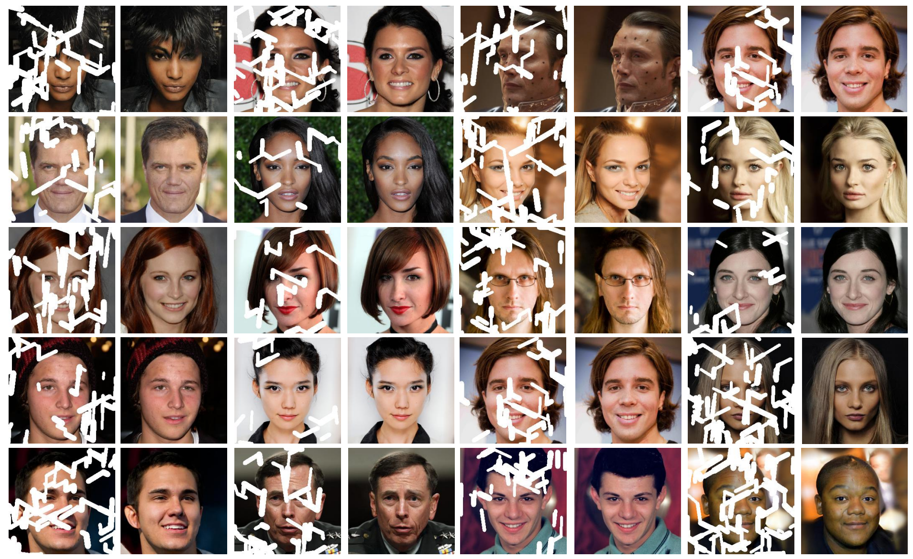

Qualitative comparison of visual results between GOUB (SDE) and UniDB (SDE) on DIV2K with zoomed-in image local regions (UniDB based on GOU process).

Qualitative comparison of visual results between GOUB (SDE) and UniDB (SDE) on the Rain100H dataset on Image Deraining (Left) and CelebA-HQ dataset on Image Inpainting (Right) with zoomed-in image local regions (UniDB based on GOU process).

Additional visual results on deraining with Rain100H datasets.

Additional visual results on 4xsuper-resolution with FFHQ datasets.

Additional visual results on thin mask inpainting with CelebA-HQ datasets to show our excellence.
